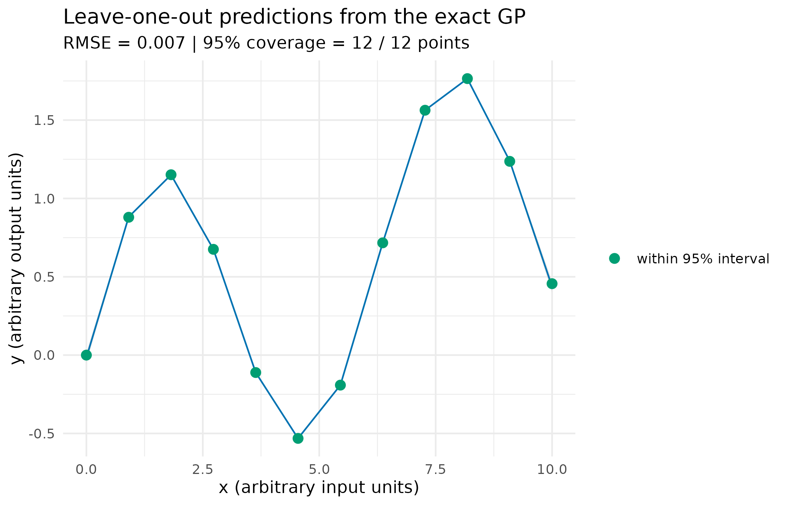
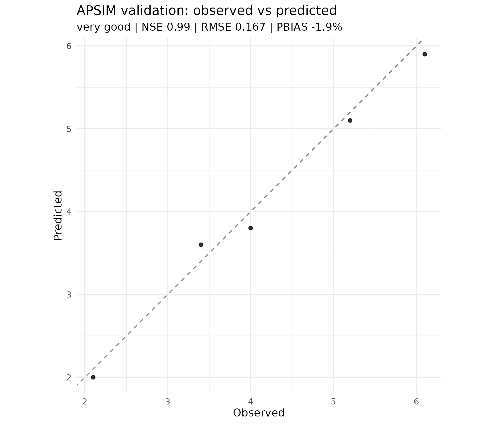

library(apsimR)
has_apsim <- apsimR::apsim_available()Why
An agronomist who already has an APSIM Next Generation file open asks one question before anything else: can I drive this simulator from R, get back a result with enough provenance that a causal or decision tool downstream can trust it, and will my analysis still tell me something useful, rather than simply fail, on a laptop where APSIM itself is not installed? This vignette answers all three parts of that question by walking every verb apsimR exposes: reading and running a simulation, fitting a reduced-form mechanism to its output, building the shared forward-model closure that calibration, sensitivity analysis and emulation all reduce to, validating simulated output against observations, generating a known-causal-structure dataset to grade a causal method against, and handing every result on into the orchestra’s shared manifest contract.
What
apsim_sim() reads an .apsimx file into a
typed object that round-trips through apsim_write();
apsim_available(), apsim_version() and
apsim_configure() report and control what simulator apsimR
finds, and every verb that needs the simulator returns a typed
apsim_abstention (checked with
is_apsim_abstention()) rather than an error when it is
absent. apsim_predict() runs the simulator once and returns
its report as a predictions manifest;
apsim_estimate() runs it across a varying input and fits an
interpretable dose-response to the result. Calibration, sensitivity
analysis and emulation are the same operation seen three ways – vary
parameters, run the simulator, reduce each run to an observation vector
– so all three are built over one shared closure,
apsim_forward_model(), fed by parameter points from
apsim_design(): apsim_calibrate() solves the
inverse problem (which parameters reproduce observed data),
apsim_sensitivity() ranks which parameters drive an output,
and apsim_emulate() fits a fast Gaussian-process surrogate
for one. apsim_validate() scores simulated output against
observations with typed goodness-of-fit metrics, and
apsim_ground_truth() uses the simulator’s ability to reveal
both potential outcomes of the same unit to manufacture a dataset with a
known causal answer, for grading a causal method that could never see
that answer from a real experiment. Every verb returns an
apsim_manifest; as_orchestra_manifest() and
as_pesto_manifest() carry that result into the wider
orchestra.
Do
Is the simulator available, and what happens when it is not?
apsimR is standalone-functional: it installs and loads with no simulator present, and every simulator-dependent verb abstains, returning a typed reason, rather than erroring, when APSIM is absent.
apsim_available()
#> [1] FALSE
apsim_version()
#> [1] NAWhen the simulator cannot be found, a verb returns an
apsim_abstention a caller can branch on. The demonstration
below deliberately points apsimR at a non-existent Models
executable to force that path, then reverts to auto-discovery.
# A minimal simulation file, and a deliberately wrong simulator path.
f <- tempfile(fileext = ".apsimx")
writeLines(paste0('{"$type":"Models.Core.Simulations, Models",',
'"Name":"Simulations","Children":[]}'), f)
apsim_configure(models = file.path(tempdir(), "no-such-Models"))
res <- apsim_predict(f)
is_apsim_abstention(res)
#> [1] TRUE
res$reason
#> [1] "runtime_unavailable"
apsim_configure() # revert to auto-discoveryReading a simulation file
An .apsimx file is a typed tree of model nodes.
apsim_sim() reads it; the object round-trips through
apsim_write(). Reading needs no simulator run, but the
object records the installed APSIM version, so this section still
depends on has_apsim.
APSIM Next Generation is not available on this build, so the shipped
Wheat example is not read here; apsim_sim() itself needs no
simulator run, but the section above shows the abstention every
simulator-dependent verb falls back to instead.
Prediction
apsim_predict() runs the simulator and returns the
simulated reports as a predictions manifest – a
contract-shaped object carrying the outputs plus provenance (the APSIM
version, an integrity hash).
APSIM Next Generation is not available on this build, so no
prediction is run here; apsim_predict() would return the
same typed abstention demonstrated above.
Estimation: fitting a reduced-form mechanism
apsim_estimate() runs the simulator across an input and
fits a reduced-form mechanism (a saturating Mitscherlich dose-response
by default), returning the fitted parameters as a
parameters manifest – the interpretable summary a causal or
decision member consumes. The default form is the classical saturating
N-response curve attributed to Mitscherlich (1909),
with asymptote
,
zero-input intercept
and curvature
governing how quickly the response saturates (the Limits section below
notes how this attribution was checked). apsim_estimate()
fits this form by nonlinear least squares through the internal helper it
calls, apsimR:::.apsim_fit_response(), which is what runs
underneath every apsim_estimate(sim, x, y) call once the
simulator is available. The demonstration below drives that helper
directly on a synthetic N-response, so it needs no simulator run:
set.seed(1)
n_rate <- seq(0, 200, by = 10)
yield <- 1.1 + 4.2 * (1 - exp(-0.018 * n_rate)) +
stats::rnorm(length(n_rate), 0, 0.1)
est_params <- apsimR:::.apsim_fit_response(n_rate, yield,
response = "mitscherlich")
est_m <- apsim_manifest("parameters", "demo", params = est_params)| ymax | rate | y0 |
|---|---|---|
| 4.259 | 0.018 | 1.072 |
The forward model: one machine for three verbs
Calibration, sensitivity analysis and emulation are the same
operation seen three ways – vary some APSIM parameters, run the
simulator, reduce each run to a small observation vector.
apsim_forward_model() builds that operation once, as a
closure of the orchestra-standard shape
function(theta) -> obs: theta is an
nreal x npar matrix (one row per parameter set),
obs an nreal x nobs matrix. A single APSIM
invocation per row applies the edits and runs the file in one
--apply config; failed runs become NA rows
rather than aborting the sweep. Building the closure and calling it are
two different costs – building is free, but calling it runs the
simulator once per row, so the call below is shown for its shape only
and is not evaluated in this render (see the note after the design table
for why).
fm <- apsim_forward_model(
apsim_example("Wheat"),
parm_paths = "[Fertilise at sowing].Script.Amount",
output = "Yield")
fm(matrix(c(0, 100, 200), ncol = 1L)) # three nitrogen rates -> three yieldsapsim_design() builds the parameter points a sweep
evaluates – a space-filling Latin hypercube by default. It is pure (no
simulator), so it runs anywhere:
d_design <- apsim_design(
c("[Sow].Script.Population", "[Fertilise].Amount"),
lower = c(50, 0), upper = c(200, 200), n = 5L, seed = 1L)| [Sow].Script.Population | [Fertilise].Amount |
|---|---|
| 176.2 | 167.1 |
| 70.6 | 135.4 |
| 103.1 | 99.9 |
| 131.5 | 39.7 |
| 151.4 | 71.1 |
The forward-model call above, and the calibration, sensitivity and
full emulation demonstrations in the next three sections, each invoke
the simulator many times over: a calibration ensemble alone runs it up
to several hundred times. Even on a build where APSIM is installed,
running all of that live inside this vignette would take much longer
than its render-time budget allows, so those calls are shown for their
shape only. Each function’s own help page carries a runnable example
gated on apsim_available().
Calibration
apsim_calibrate() solves the inverse problem: find the
parameters whose simulated observations best match data, over a box. The
optim backend returns a bounded least-squares point
estimate with no extra dependency; the ies backend (default
when PESTO is installed) returns a posterior parameter
ensemble through an iterative ensemble smoother, with RTPS inflation
guarding against ensemble collapse. Several targets calibrate jointly
through one weighted misfit.
apsim_calibrate(
apsim_example("Wheat"),
parm_paths = "[Fertilise at sowing].Script.Amount",
lower = 0, upper = 250,
observed = c(Yield = 2200), output = "Yield",
backend = "ies", n_real = 50L, seed = 1L)Sensitivity analysis
apsim_sensitivity() asks which inputs drive an output.
Morris screening (the default) ranks factors by mean absolute elementary
effect (mu_star) at a cost of r(p + 1) runs
and flags interaction or non-linearity (sigma); the
Sobol-Jansen method decomposes the output variance into first-order
(S) and total (T) indices at a higher cost of
n(p + 2) runs. Both use the sensitivity
package over the same forward model.
apsim_sensitivity(
apsim_example("Wheat"),
parm_paths = c("[Fertilise at sowing].Script.Amount",
"[Sow using a variable rule].Script.Population"),
lower = c(0, 50), upper = c(250, 200),
output = "Yield", method = "morris", morris_r = 10L, seed = 1L)Emulation
A single APSIM run costs seconds; a sweep needs thousands.
apsim_emulate() runs the simulator at a space-filling
design once, fits a Gaussian-process surrogate, then predicts anywhere
in microseconds with a calibrated uncertainty. Every emulator is
returned with mandatory leave-one-out diagnostics: a surrogate with no
measure of its own reliability is worse than none. The default backend
is a genuine exact GP with an automatic-relevance-determination (ARD)
squared-exponential kernel,
with a per-dimension length-scale
,
signal variance
and noise variance
all fitted by maximising the exact log marginal likelihood (Rasmussen
and Williams, 2006, Gaussian Processes for Machine Learning),
not fixed by a heuristic. It needs no extra package and is exercised
directly here (via the internal training/prediction pair
apsimR:::.apsim_gp_train() /
apsimR:::.apsim_gp_predict() that
apsim_emulate() itself calls) on a one-dimensional test
function, with a genuine leave-one-out pass – each point predicted from
a GP refit on the other eleven – rather than a stand-in smoother:
set.seed(1)
truth <- function(x) sin(x) + 0.1 * x
xtr <- matrix(seq(0, 10, length.out = 12), ncol = 1L)
ytr <- truth(xtr[, 1L])
# A genuine leave-one-out pass: refit the GP on the other 11 points and
# predict the held-out one, for each point in turn.
loo <- t(vapply(seq_len(nrow(xtr)), function(i) {
gp <- apsimR:::.apsim_gp_train(xtr[-i, , drop = FALSE], ytr[-i])
pr <- apsimR:::.apsim_gp_predict(gp, xtr[i, , drop = FALSE])
c(mean = pr$mean, sd = pr$sd)
}, numeric(2)))
loo_rmse <- sqrt(mean((ytr - loo[, "mean"])^2))
lo <- loo[, "mean"] - 1.96 * loo[, "sd"]
hi <- loo[, "mean"] + 1.96 * loo[, "sd"]
covered <- ytr >= lo & ytr <= hi
loo_df <- data.frame(
x = xtr[, 1L], y_true = ytr, y_mean = loo[, "mean"], lo = lo, hi = hi,
covered = ifelse(covered, "within 95% interval", "outside 95% interval"))
ggplot2::ggplot(loo_df, ggplot2::aes(x = x)) +
ggplot2::geom_ribbon(ggplot2::aes(ymin = lo, ymax = hi),
fill = "grey80", alpha = 0.5) +
ggplot2::geom_line(ggplot2::aes(y = y_mean), colour = "#0072B2") +
ggplot2::geom_point(ggplot2::aes(y = y_true, colour = covered), size = 2.6) +
ggplot2::scale_colour_manual(
name = NULL,
values = c("within 95% interval" = "#009E73",
"outside 95% interval" = "#D55E00")) +
ggplot2::labs(
x = "x (arbitrary input units)", y = "y (arbitrary output units)",
title = "Leave-one-out predictions from the exact GP",
subtitle = sprintf("RMSE = %.3f | 95%% coverage = %d / %d points",
loo_rmse, sum(covered), length(covered))) +
ggplot2::theme_minimal()
Leave-one-out predictions from the exact GP against the true test function, with the fitted 95% interval (shaded) and the GP mean (line). Point colour marks whether the truth fell inside its own held-out interval; the subtitle reports the RMSE and coverage count the caption below also interprets.
A single twelve-point draw is far too small to certify calibration
either way; the reported coverage95 from a full
apsim_emulate() run (typically evaluated over dozens of
held-out points against a design of thirty or more) is the number to
trust, and it can – and, on at least one independent Branin-function
check, did – run below its nominal 95%, so read it rather than assume
the interval is calibrated.
On the simulator the same idea fits an emulator of yield against
nitrogen, with apsim_emulate() reporting the leave-one-out
RMSE, R-squared and 95% coverage, and predict() emulating
new rates. Like the calibration and sensitivity calls above, running
this against the real simulator costs thirty APSIM invocations, so it is
shown for its shape only:
em <- apsim_emulate(
apsim_example("Wheat"),
parm_paths = "[Fertilise at sowing].Script.Amount",
lower = 0, upper = 250, output = "Yield", n = 30L, seed = 1L)
em # prints the LOO diagnostics
predict(em, matrix(c(75, 175), ncol = 1L))Validation
apsim_validate() confronts simulated output with
observations and reports the standard agronomic goodness-of-fit metrics
– error magnitude (RMSE, MAE), direction (mean error, percent bias) and
skill relative to the observed mean (Nash-Sutcliffe efficiency,
Willmott’s index of agreement, RSR) – with a typed verdict against the
performance bands of Moriasi et al. (2007). It accepts an
apsim_predict() manifest, a data frame (optionally joined
to the observations on a key such as date), or plain vectors:
observed <- c(2.1, 3.4, 4.0, 5.2, 6.1)
simulated <- c(2.0, 3.6, 3.8, 5.1, 5.9)
v <- apsim_validate(simulated, observed)| n | me | mae | rmse | nse | r2 | d | rsr | pbias |
|---|---|---|---|---|---|---|---|---|
| 5 | -0.08 | 0.16 | 0.167 | 0.986 | 0.99 | 0.996 | 0.107 | -1.923 |
An observed-versus-predicted plot is available through
apsim_validation_plot() when ggplot2 is
installed:

Simulated against observed values for the five-point demonstration pair, with the 1:1 line of perfect agreement. Points close to the line and on both sides of it (rather than all above or all below) indicate no systematic bias, consistent with the near-zero percent bias reported in the table above.
Ground truth: APSIM as a causal test-bench
A real experiment never observes both potential outcomes of the same
unit, so the true causal effect is unknowable and a causal method can
only be trusted, never scored. A process simulator escapes that: run the
same unit under control and under treatment and both outcomes are known.
apsim_ground_truth() does this across heterogeneous units
to manufacture an observing-system simulation experiment (OSSE) – a
dataset of observed (covariates, treatment, outcome) whose
true individual and average treatment effects are recorded alongside.
Treatment can be assigned at random, or confounded by a covariate that
also moves the outcome, so a causal member (such as the orchestra’s
kernR tools) can be handed the observed data and graded against the
truth it cannot see. Each unit needs two simulator runs (one per
potential outcome), so this demonstration is also shown for its shape
only:
units <- data.frame(
`[Sow using a variable rule].Script.Population` = c(80, 120, 160, 200),
check.names = FALSE)
gt <- apsim_ground_truth(
apsim_example("Wheat"),
treatment = "[Fertilise at sowing].Script.Amount",
control = 0, treated = 150, units = units, output = "Yield",
assignment = "confounded",
confounder = "[Sow using a variable rule].Script.Population", seed = 1L)
gt # prints the true ATE and the (biased) naive difference
head(gt@observed) # (covariates, W, Y) -- the input to a causal method
gt@truth$ate # the answer keyUnder confounding the naive treatment-minus-control difference is
biased away from gt@truth$ate; a causal method that
conditions on the covariates should recover the recorded ATE. That
recovery is the validation gate for the orchestra’s causal members.
Composing with the orchestra
Every result-returning verb produces an apsim_manifest,
a versioned, provenance-complete object of its own. Two adapters carry
it into the wider orchestra.
as_orchestra_manifest() emits the federation’s general
result contract (orchestra_manifest, contract C2 v2 in
ORCHESTRA.md) at schema 2.0.0-draft, and is
the route for any apsimR result. A prediction stays a prediction, a
sensitivity table becomes a statement about parameters, and an emulator
or a validation becomes a statement about predictions – with the
original apsimR target preserved in the manifest’s metadata and a
validation verdict lifted into the contract’s typed summary
slot. verify_manifest() recomputes the payload hash, so a
consumer detects a manifest whose payload was modified after emission.
The hash recipe itself is tested against an independently authored
sibling implementation (optimix) in the package’s own test
suite, which this vignette does not repeat.
om <- as_orchestra_manifest(v)
om
#> <orchestra_manifest>
#> schema: 2.0.0-draft
#> emitter: apsimR 0.3.2.9000
#> target: predictions
#> method: apsim:validate
#> run_id: apsimR-8124ba10b764
#> verdict: very good
#> outputs: 5 rows x 2 cols
#> hash: sha256:8124ba10b76475f322f9bffeadb3776a15ca0c35f2c2a9db2591a98a3572e63fas_pesto_manifest() bridges into PESTO’s
narrower C2 ensemble contract (pesto_ensemble_manifest),
which carries a parameter ensemble alongside the row-aligned simulated
observations that ensemble produced. Exactly one apsimR result is an
object of that kind – the posterior ensemble from
apsim_calibrate(backend = "ies"), which
PESTO’s own ensemble smoother produced. Every other result
abstains with a typed reason naming the requirement it does not meet and
pointing back at as_orchestra_manifest(), rather than being
forced into slots it has no basis to fill.
Read
APSIM Next Generation is not installed on this build, so every simulator-dependent section above took the abstention path instead of a real run – the same path the deliberately-broken configuration demonstrates directly.
apsim_available() reports FALSE on the machine that
rendered this copy of the vignette, and the deliberately-misconfigured
call above abstains with reason runtime_unavailable, exactly the reason
a genuinely APSIM-less build would report from every simulator-dependent
verb. The fitted Mitscherlich curve on the synthetic N-response
demonstration recovers an asymptote of 4.26, a curvature of 0.0182 and a
zero-input intercept of 1.07, against the generating values
4.2, 0.018 and 1.1 used to build
the synthetic data above – close enough, on this one draw, to show the
fit recovers the generating mechanism rather than merely interpolating
it. The Latin hypercube design table spans both parameters’ full ranges
(population 50 to 200, fertiliser amount 0 to 200) at its five requested
points, which is what a space-filling design over a box is meant to do
at even a handful of points.
On the twelve-point leave-one-out demonstration, every held-out point sits close to its own leave-one-out prediction (RMSE 0.007), and the shaded 95% interval covers the truth at 12 of 12 points, exactly as the figure’s colour split shows.
The validation demonstration grades a five-point synthetic pair as very good (Nash-Sutcliffe efficiency 0.99, RMSE 0.167, percent bias -1.9), and the figure shows why: the points sit close to the 1:1 line on both sides of it rather than uniformly above or below, consistent with a percent bias close to zero.
Lifting that validation result through
as_orchestra_manifest() produces a manifest whose integrity
check passes (verify_manifest(om)$ok is TRUE) and whose
headline verdict, very good, matches the validation’s own typed grade
above – the contract’s typed summary slot is not a
re-derivation, it is the same verdict carried into a shape every other
orchestra member can read without knowing apsimR’s own vocabulary.
Taken together, the answer to the opening question is yes on all three counts: apsimR drives APSIM from R, returns results with enough provenance (a hashed, versioned manifest) for a downstream member to trust, and, on a build without the simulator, every one of those same verbs abstains with a typed reason rather than failing outright, as the abstention demonstration above shows directly.
Limits
This vignette runs one real simulator call, if APSIM is installed,
and otherwise demonstrates the abstention path a real run would fall
back on; the calibration, sensitivity, full emulation and ground-truth
sections show only the shape of a call whose simulator cost (from dozens
to several hundred APSIM invocations) does not fit this vignette’s
render-time budget, even on a build where the simulator is present –
each function’s own help page carries a runnable, simulator-gated
example instead. The twelve-point leave-one-out demonstration is a small
synthetic illustration, not a calibration certificate: coverage measured
on twelve points is not a meaningful diagnostic on its own, and the text
above says so explicitly before quoting a number from it. The Moriasi et
al. (2007) verdict bands were derived for monthly watershed and
streamflow simulation, not paddock-scale crop yield, and the typed grade
in metadata$verdict reads Nash-Sutcliffe efficiency alone;
the RMSE and percent bias reported in the same table are worth reading
alongside it rather than trusting the single label. The Mitscherlich
(1909) attribution for the saturating dose-response form, and the
Rasmussen and Williams (2006) attribution for the exact-GP formulation,
are both cited from the literature record; neither citation was checked
against its original source in this pass, so the historical attribution
should be read as indicative rather than bibliographically confirmed.
The ground-truth demonstration illustrates the mechanism – a confounded
assignment biases a naive comparison away from the recorded average
treatment effect – without itself running; grading a causal method
against apsimR’s OSSE output, the validation gate the Do section
describes, is not exercised here. The exact-GP backend’s anisotropic fit
has been checked elsewhere against a reference implementation
(DiceKriging), a comparison this vignette does not repeat.
What to read next
The package’s function reference lists every verb this vignette does
not have room to run for real, each documented with its own runnable,
simulator-gated example. Getting Started with PESTO introduces
the iterative ensemble smoother that
apsim_calibrate(backend = "ies") delegates to. Getting
started with decideR walks the decision layer that reads the
orchestra_manifest this vignette’s final section
builds.
Reproduce
Seed 1 for the synthetic N-response, the Latin-hypercube
design, the leave-one-out demonstration and the
calibration/sensitivity/emulation call shapes shown above. Package
versions and the APSIM version this copy was rendered against
follow.
apsim_version()
#> [1] NA
sessionInfo()
#> R version 4.6.1 (2026-06-24)
#> Platform: x86_64-pc-linux-gnu
#> Running under: Ubuntu 24.04.5 LTS
#>
#> Matrix products: default
#> BLAS: /usr/lib/x86_64-linux-gnu/openblas-pthread/libblas.so.3
#> LAPACK: /usr/lib/x86_64-linux-gnu/openblas-pthread/libopenblasp-r0.3.26.so; LAPACK version 3.12.0
#>
#> locale:
#> [1] LC_CTYPE=C.UTF-8 LC_NUMERIC=C LC_TIME=C.UTF-8
#> [4] LC_COLLATE=C.UTF-8 LC_MONETARY=C.UTF-8 LC_MESSAGES=C.UTF-8
#> [7] LC_PAPER=C.UTF-8 LC_NAME=C LC_ADDRESS=C
#> [10] LC_TELEPHONE=C LC_MEASUREMENT=C.UTF-8 LC_IDENTIFICATION=C
#>
#> time zone: UTC
#> tzcode source: system (glibc)
#>
#> attached base packages:
#> [1] stats graphics grDevices utils datasets methods base
#>
#> other attached packages:
#> [1] apsimR_0.3.2.9000
#>
#> loaded via a namespace (and not attached):
#> [1] gtable_0.3.6 jsonlite_2.0.0 dplyr_1.2.1 compiler_4.6.1
#> [5] tidyselect_1.2.1 Rcpp_1.1.2 jquerylib_0.1.4 systemfonts_1.3.2
#> [9] scales_1.4.0 textshaping_1.0.5 yaml_2.3.12 fastmap_1.2.0
#> [13] ggplot2_4.0.3 R6_2.6.1 labeling_0.4.3 generics_0.1.4
#> [17] knitr_1.52 tibble_3.3.1 desc_1.4.3 bslib_0.12.0
#> [21] pillar_1.11.1 RColorBrewer_1.1-3 rlang_1.3.0 cachem_1.1.0
#> [25] xfun_0.62 fs_2.1.0 sass_0.4.10 S7_0.2.2
#> [29] otel_0.2.0 cli_3.6.6 pkgdown_2.2.1 withr_3.0.3
#> [33] magrittr_2.0.5 digest_0.6.39 grid_4.6.1 lifecycle_1.0.5
#> [37] vctrs_0.7.3 evaluate_1.0.5 glue_1.8.1 farver_2.1.2
#> [41] ragg_1.5.2 lhs_1.3.0 rmarkdown_2.32 tools_4.6.1
#> [45] pkgconfig_2.0.3 htmltools_0.5.9